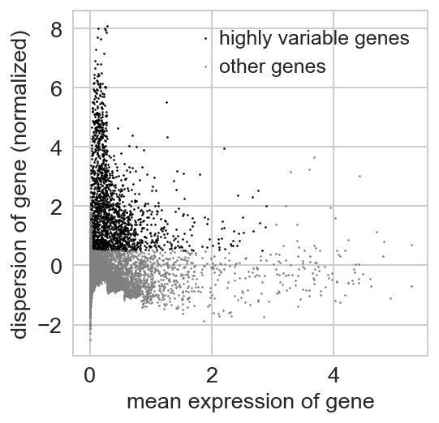
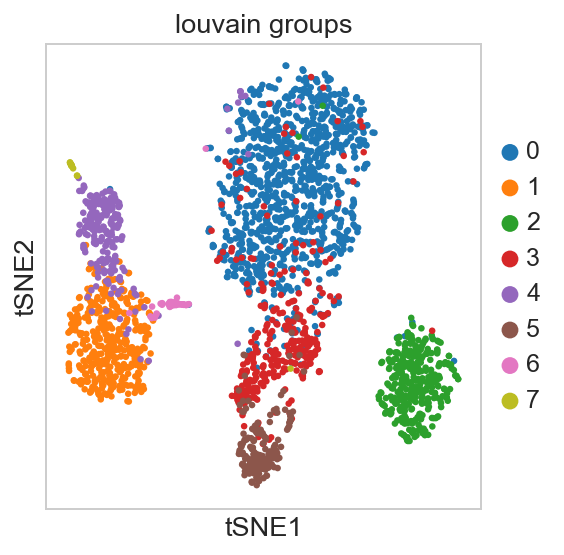
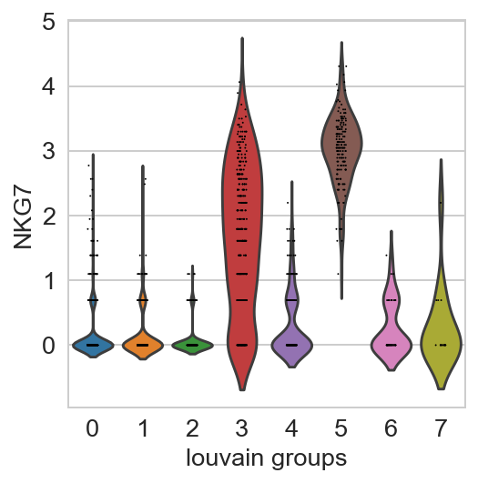
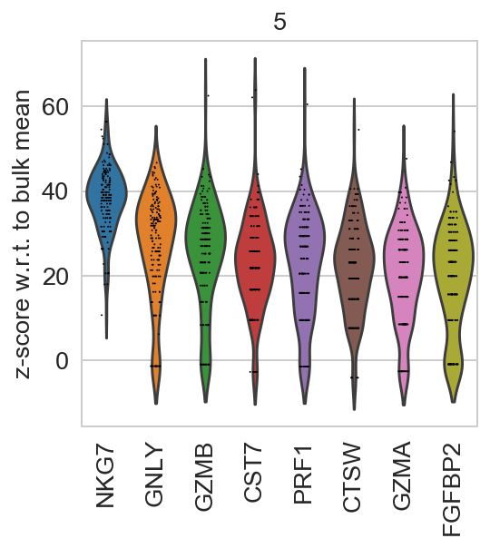
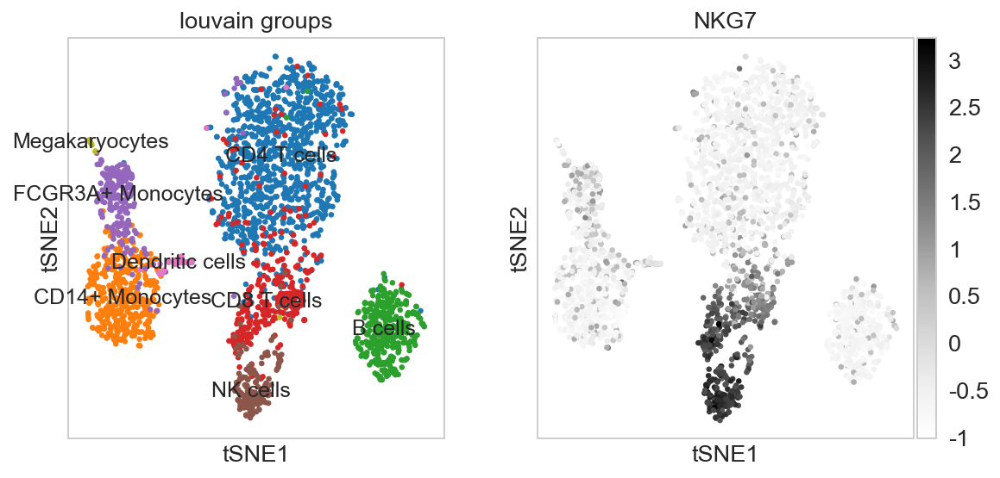
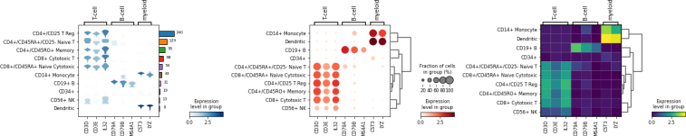
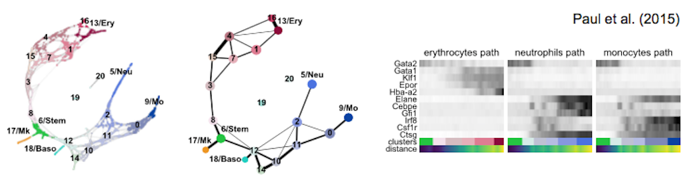
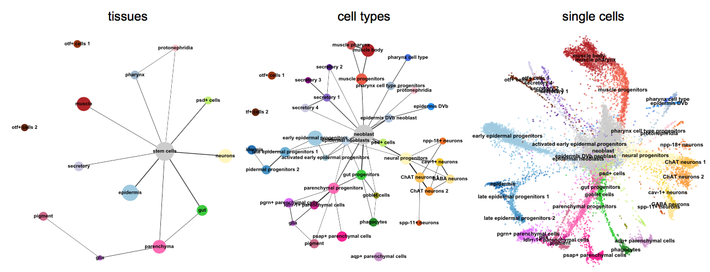
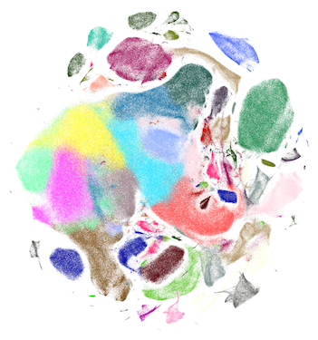
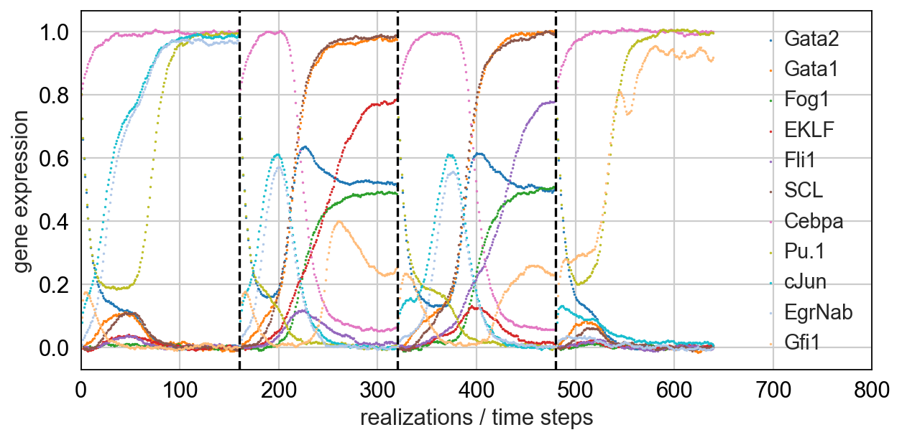

Tutorials
Clustering
For getting started, we recommend Scanpy’s reimplementation → tutorial: pbmc3k of Seurat’s [Satija15] clustering tutorial for 3k PBMCs from 10x Genomics, containing preprocessing, clustering and the identification of cell types via known marker genes.
    {kind=link}
{kind=link}
{kind=link}
{kind=link}
{kind=link}
Visualization
This tutorial shows how to visually explore genes using scanpy. → tutorial: plotting/core
{kind=link}
Trajectory inference
Get started with the following example for hematopoiesis for data of [Paul15]: → tutorial: paga-paul15
{kind=link}
More examples for trajectory inference on complex datasets can be found in the PAGA repository [Wolf19], for instance, multi-resolution analyses of whole animals, such as for planaria for data of [Plass18].
{kind=link}
As a reference for simple pseudotime analyses, we provide the diffusion pseudotime (DPT) analyses of [Haghverdi16] for two hematopoiesis datasets: DPT example 1 [Paul15] and DPT example 2 [Moignard15].
Integrating datasets
Map labels and embeddings of reference data to new data: → tutorial: integrating-data-using-ingest

Spatial data
Basic analysis of spatial data: → tutorial: spatial/basic-analysis
Integrating spatial data with scRNA-seq using scanorama: → tutorial: spatial/integration-scanorama
{kind=link}
Further Tutorials
Conversion: AnnData, SingleCellExperiment, and Seurat objects
See Seurat to AnnData for a tutorial on
anndata2ri.See the Scanpy in R guide for a tutorial on interacting with Scanpy from R.
Regressing out cell cycle
See the cell cycle notebook.
{kind=link}
Scaling Computations
Visualize and cluster 1.3M neurons from 10x Genomics.
Simulations
Simulating single cells using literature-curated gene regulatory networks [Wittmann09].
{kind=link}
Notebook for myeloid differentiation
Notebook for simple toggleswitch
Images
See pseudotime-time inference on deep-learning based features for cell cycle reconstruction from image data [Eulenberg17].